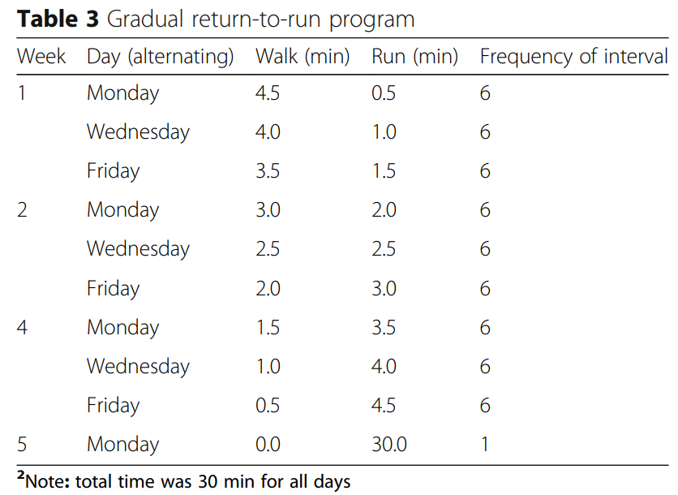

I’m finally in the return to run phase of my ITBS! This post recaps the many mistakes I made while trying to return to running early on in my ITBS and the ITBS-specific return to run plan I eventually found and followed once the pain settled and I was able to start making solid progress.
First, how not to be active with ITBS
My ITBS started just over 13 weeks ago and I spent the first 8 weeks making it as severe as possible. I once woke up at 1:30 am with incinerating knee pain and hobbled out of bed to book another ortho appointment. I had been so desperate to maintain cardiovascular fitness that I was biking or using the elliptical most days and running on non-consecutive days as often and as much as tolerable. I had read the advice on exercising with ITBS and I thought I knew the rule: stop if you have pain. The problem was, I had managed to interpret this as: every day, push until you have pain, then stop. No!
This was problematic because of something I’ve come to think of as “pain-creep”: I was always in a little bit of pain, so it was hard to gauge when activities were causing additional pain. I didn’t generally have much additional pain using the elliptical, but by tracking my daily pain in a calendar spreadsheet with color-coded cells depicting my level of pain, I noticed that I was having especially painful days the day after my elliptical sessions.
In addition to the day-after pain lag, I was also engaged in so many different activities that it was difficult to tell which activities were problematic. I was initially convinced that the elliptical was more agreeable with me than the stationary bike because I had pain at the end of bike sessions but not at the end of elliptical sessions of similar length. Early on, I could bike on a stationary bike for 90 minutes with only mild ITBS pain starting up toward the end. This was surprising to me because ITBS is also a cycling injury; I didn’t understand how it didn’t seem to trigger the pain I would feel within 2 minutes of running. I took this as permission to bike as much as I wanted. Gradually, however, the walls closed in, and my sessions shrank to 50 minutes, 30 minutes, and on my worst day, just 3 minutes of cycling before pain came on.
When I did try to run every few days, I knew about the recommended run/walk intervals but wasn’t convinced that I needed to go as short as these programs sometimes begin (for example, 1 min running, 2 min walking). Instead, I typically tried to run in 5-8 minute segments separated by a few minutes of walking. I would have mild pain start in the first run segment, but I would try to complete as many segments as possible before the pain felt like it was more than the amount of pain I started with (pain-creep problem). I would also try to push for more time running than the previous time to give myself the illusion of progress. I always had a heightened level of pain after running, sometimes for another day or two, with occasional stabbing pains punctuating the ever-present deep ache along the side of my knee.
Changing course
The day I could only bike for 3 minutes without pain was the day it really sank in that I wasn’t managing my ITBS correctly, and it sucked to realize I had floundered pointlessly for 8 weeks. I should mention that I had been doing ITBS-targeted strength training during this time, so it wasn’t all counterproductive. But I was continuing to anger my knee day after day with a jumble of activities and the pain had mounted to a level in which I was always in some kind of deeply aching state, with random stabbing pains that sometimes even woke me up at night. I decided that I would simplify my approach by only allowing myself to bike pain-free so that I would be able to see clear evidence of progress if I managed to stay on the bike longer without pain. The problem, of course, is that I was still biking until reaching pain. After my 3 minute ride day, I found myself reaching 15, 20, 30, 35 minutes on the following rides - and then 25, 20, 20, as the walls closed in on me again.
A chatGPT rehab approach
Around this time I got an MRI which confirmed ITBS (a friend had freaked me out about this possibly being a meniscus injury) and I went to a physical therapist for a movement screen, which (frustratingly) suggested that my ITBS leg is actually a little bit stronger than my unaffected leg. I complained to chatGPT about my 9 weeks with ITBS. I told it about my movement screen and strength training but that my ITBS was not clearing up and I needed a plan to get back on my feet. It gave me a plan:
Phase 1: Absolute rest from aggravating movements for 2 weeks, then
Phase 2: Try pool running or a short cycling session (5-10 min), and if no pain, take another day off, and then
Phase 3: Try 5 repeats of running 30 seconds, walking 2 minutes
I was at the end of my rope, so I decided to follow this plan starting with 2 weeks of rest. ChatGPT said walking would be fine if it didn’t provoke symptoms, so I went on short walks most days. Day by day, I returned to this same chat session and updated chatGPT with my progress and how I was feeling. By day 5 I could descend stairs normally with only minimal pain (this had been my most disruptive daily-life symptom and I had been going down stairs backwards for months). I was having weird aches and pains during this time, higher up in the lateral quad, and around the fibular head and Gerdy’s tubercle - just short-lived sensations that chatGPT reassured me were part of the “rebalancing process” and not to worry unless they got worse. On day 8, I had to jog a few steps to make it across a crosswalk, and I was disappointed to find that I instantly had a resurgence of ITBS knee pain during those jogging steps. ChatGPT encouraged me to stay the course and asked if I had any lingering pain when walking afterwards - I did not! - to which it pointed out that this was a positive sign.
By day 11, I was feeling really pain-free and normal. I had had a couple days with no pain on stairs and could walk for miles without consequence. I was eager and nervous to soon try a potentially aggravating activity when I faced an unexpected hiccup in my plan: on the morning of day 12, I slipped backwards and fell down the stairs on my spine and hip (non-ITBS side). Thankfully nothing was fractured, but the bruising and swelling caused my (good) leg to tingle and ache deeply when trying to stand up so I was immobilized on the couch. My husband had a half-marathon race a few days later that I couldn’t go watch him at because I couldn’t walk. It ultimately took 9 days for me to return to standing comfortably and outdoor walking.
Return to run
When I could walk without back pain, I readied myself to try chatGPT’s suggestion of a 5x (30 sec run, 2 min walk) initial walk-run attempt. Because of my back injury, it had been 3 full weeks of no aggravating activity and I was excited to try running again.
I decided to search for return to run plans, since chatGPT had only given me that one initial walk-run workout. There are myriad return to run plans on the web, but they’re pretty varied. Some are clearly for people returning from some type of injury and others don’t say and may just be for people coming back from a break. Does it matter? I thought it might, since when I had been unsuccessfully running with ITBS I learned quickly that shorter intervals were more tolerable than longer intervals.
I turned to the ITBS literature and read about rehab approaches. Beyond some investigation into hip exercises, there hasn’t been much work devoted to the process of returning to run with ITBS. I found one paper (McKay et al, 2020) that included a return to run plan that was used with a cohort of 24 female runners with ITBS; although results in the paper focus on outcomes from different exercises, the paper does note that none of the runners experienced a recurrence of symptoms during the study. So, with no other ITBS-specific plan out there, I decided I would follow the plan in this study. Because the first run/walk is so similar to the chatGPT suggestion I had been planning on starting with, I opted to just follow this plan instead.

How it’s going
I just completed the 6th row in this table: 6 repeats of 3 minutes running, 2 minutes walking. The runs have been going better than expected in some ways, but new challenges are arising. I am thrilled to be outside again, and despite feeling out of breath and not very smooth I do actually feel strong, sturdy, and snappy - in my head I feel that I am running pretty well. My Garmin metrics back this up: my cadence, ground contact time, and vertical oscillation are similar to what they were pre-ITBS. My stride length is a little longer but I have no sense of pace yet and am running a little faster than I should be, but working on it. My heart rate spiked like crazy during the first few run/walk days but is starting to look more typical.
I haven’t had any ITBS pain while running (if I do I plan to stop immediately), but after runs I am having a lot of pain paranoia and - I think (???) - brief uncomfortable sensations in the area where I used to have IT band pain. It’s really hard to distinguish between my idle intense focus on the area, always listening for any pain signal, and actual discomfort. Also, my knee pops a lot and I don’t remember if it did this pre-ITBS. But I can still descend stairs without any pain, which seems like a good indicator that I haven’t run myself into the depths of ITBS hell again yet. Stay tuned.